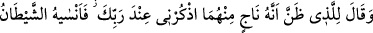
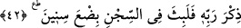

zorudur. Hâkim, çok şiddetli bir cezâ olarak insanlara ibret olsun diye bazı suçlular
hakkında bu cezâyı verebilir.
Âyetin işareti şöyledir: Nefis ruha aklı gizleyip örten bir şarap içirir. Bu şarap bazen
nefsânî şehvet ve lezzetlerden olur. Bazen de muâmele ve mücâhedelerin kadehleriyle
rabbanî keşf ve müşâhedelerin şarabı olur. Nefis ebediyyen ruh kralının hizmetindedir.
Beden ise ölüm ipiyle asılır, kralın yardımcısı olan kuşlar bedenin başındaki dimağda
toplanan bozuk hayalleri yiyip yok ederler.
Bilesin ki ölüm en şiddetli şeydir. Ölüm sırasında insanın her şeyle alâkası kesilir.
Geriye sadece şu üç sıfatı kalır: Kalb temizliği, Allah’a zikretmeye karşı kazandığı
ünsiyet ve Allah sevgisi. Âşikardır ki kalbin dünyâ kirlerinden arıtılıp temizlenmesi,
ancak marifetle mümkündür. Marifet de ancak zikir ve tefekküre devam etmekle
mümkün olur. En hayırlı zikir ise kelime-i tevhid zikridir. Bir hadiste şöyle buyrulur:
“Allah’ı zikretmek îmanın alâmeti ve nifaktan kurtuluştur. Şeytandan ve cehennemden
korunmadır.”[41]
Molla Câmî şöyle der:
Gönlün Allah Teâlâ’yı gösteren bir aynadır
Senin aynanın yüzü neden bulanıktır?
O aynaya bir cilâ al, cilâ vur
Aynan aydınlık olsun
Eğer bilmezsen onun cilâsı,
Lâ ilâhe illallah’dan başkası değildir
42. Onlardan kurtulacağını sandığı kimseye şöyle dedi: “Beni efendinin yanında
an, (umulur ki beni çıkarır).” Fakat şeytan ona, efendisine söylemeyi unutturdu.
Dolayısıyla (Yûsuf), birkaç yıl daha zindanda kaldı.
Yûsuf “Onlardan kurtulacağını sandığı” kani olduğu ve bildiği “kimseye” o iki
gençten sâkî olana “şöyle dedi:”
“ (zannetmek, sanmak)”, zıt anlamlı fiillerdendir. Şüphe için de kesin bilgi için de
kullanılır. Burada ise ‘iş kesinleşmiştir’ ifadesinin de gösterdiği üzere vahye dayalı bir
rüyâ tabiri söz konusudur. Çünkü Yûsuf (a.s.)’ın cevabı sâdece tâbire dayansaydı, ‘iş
kesinleşmiştir’ demezdi. Zîrâ rüyâ tabiri zanna dayanır. Kazâ ise kesin bir zorunluluk
ve zanna göre verilmesi câiz olmayan kat’î bir hükümdür.
“Beni efendinin yanında an” ve: “Zindanda haksız yere mağdur olan bir genç var.
Uzun süredir hapiste” de. Belki bana acır da beni bu kötü durumdan kurtarır.